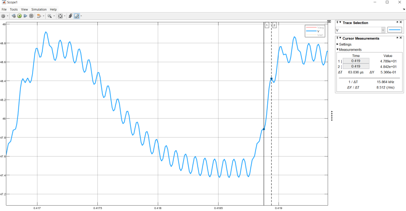
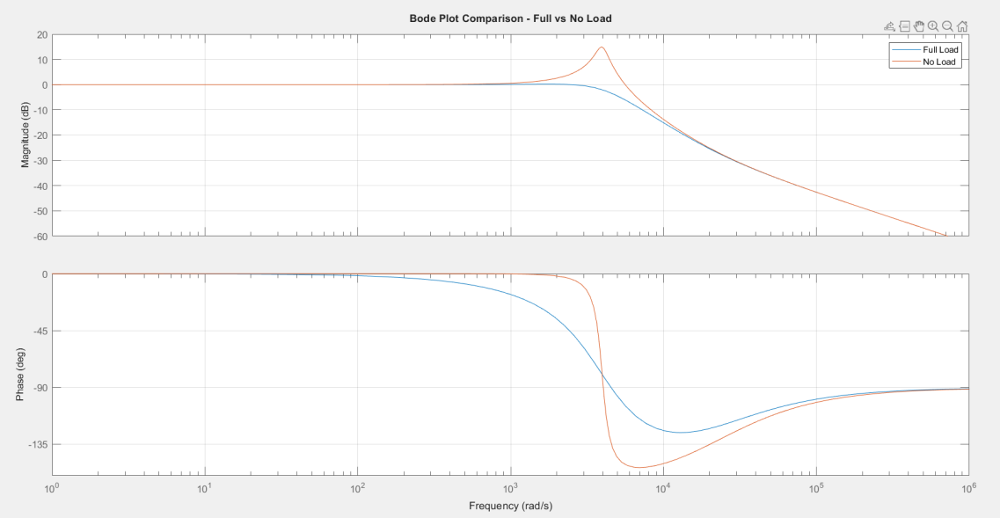
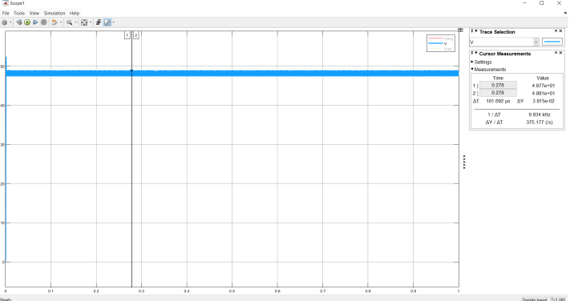
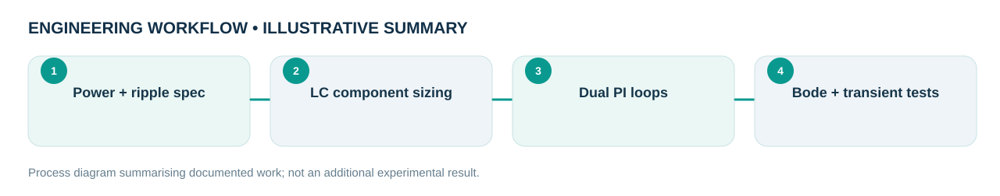

Engineering problem
How can a 100 V-to-48 V converter maintain output regulation under load changes without excessive ripple or poorly damped transients?
Designed and documented a closed-loop DC–DC buck converter using an inner current loop and outer voltage loop, with an additional single-loop model for comparison. Component sizing and controller tuning were studied through steady-state, step-response and frequency-domain simulations.
My role and technical ownership
I prepared the converter sizing calculations, single-loop and cascaded PI-controller designs, Simulink implementations and comparative evaluation.
How I approached the work
- Calculated nominal LC values from ripple design constraints, then iterated passive-component values using simulated load and step responses.
- Implemented an inner inductor-current PI loop and an outer output-voltage PI loop; retained the single-loop model as a point of comparison.
- Examined full-load and no-load Bode plots, controller phase margins, steady-state ripple and startup transient behavior.
- Distinguished between outcomes that meet nominal specifications and the problematic lightly loaded response.
What the evidence shows
Simulated nominal operating point: 100 V input, 48 V output, 1 kW, 50 kHz; reported voltage ripple ~1.1%, current ripple ~9.6%, full-load output overshoot 1.69%. No-load transient overshoot reached ~75%.
Design files, models & results
Original CAD screenshots, simulation plots or project photographs are shown wherever they were available. Select a figure to open the larger file. Workflow graphics are clearly labelled as illustrative.






Limitations and engineering learning
No-load transient response is significantly underdamped in the supplied report. These are reported simulation results, not physical bench-test measurements.
Engineering takeaway: The no-load transient is a substantive limitation, not a success metric. Practical follow-up would address damping / light-load control and revalidate with switching and component nonidealities.